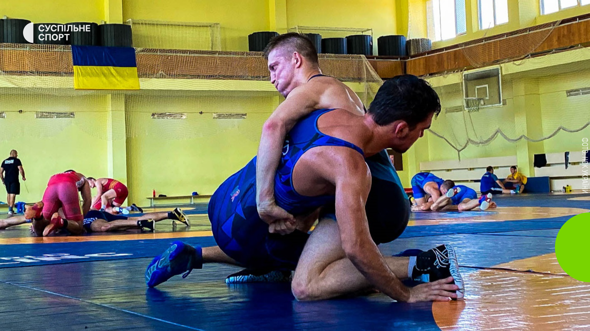
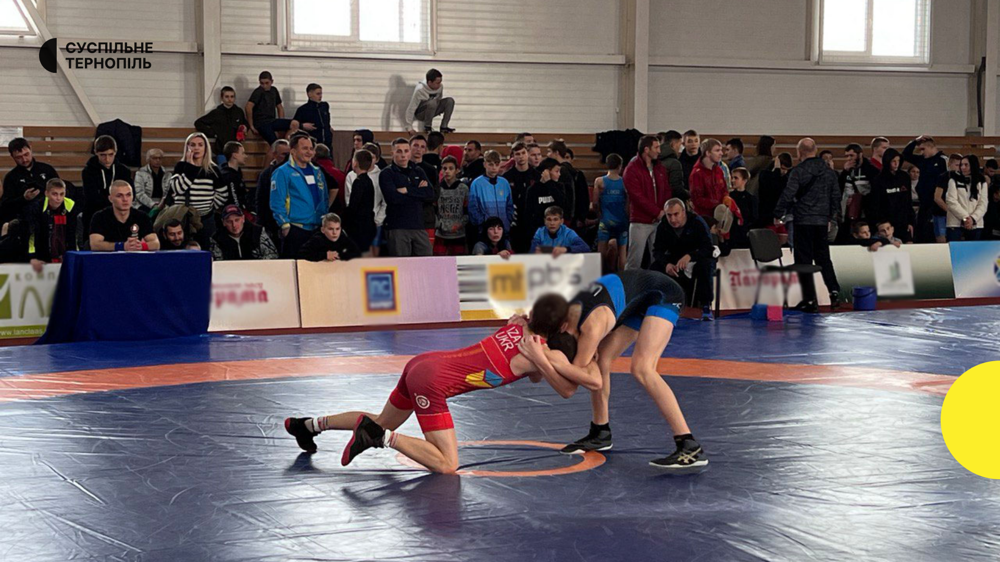
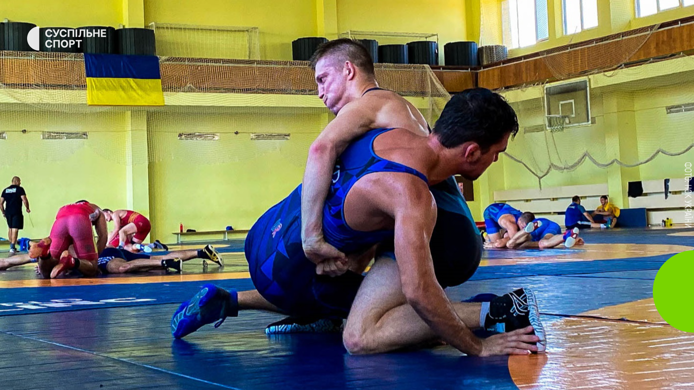
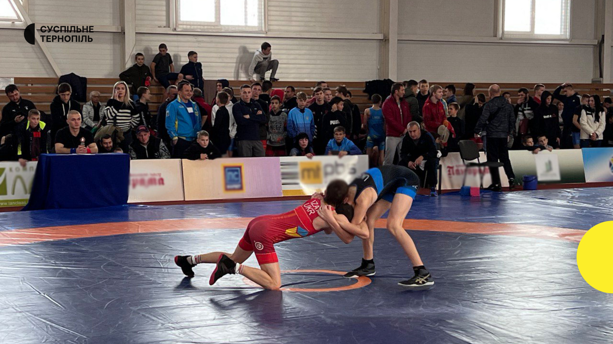
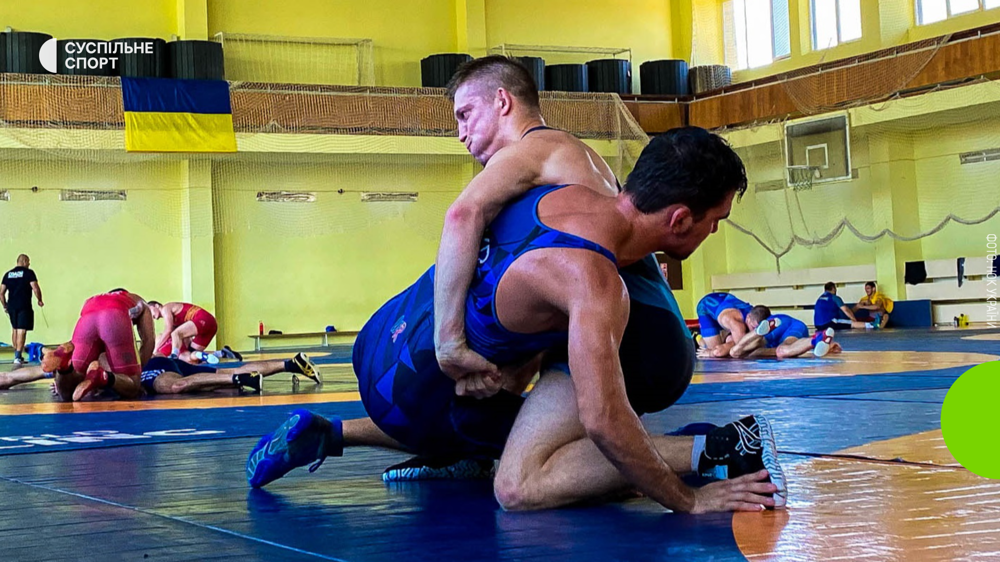
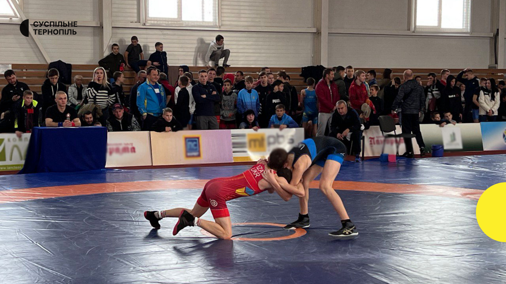

⬆


Греко-римська боротьба — європейський вид боротьби, мета якого — покласти супротивника на лопатки. В цьому стилі боротьби суворо заборонено захоплення нижче пояса, підніжки.
Греко-римська боротьба виникла у Стародавній Греції. Вона відігравала значну прикладну роль у фізичній підготовці воїнів. Після завоювання Греції Римом, останній освоїв грецьку культуру. Боротьбу у римлян використовували у поєднанні з кулачним, а в боях гладіаторів — з озброєним боєм. Після заборони гладіаторських поєдинків та Олімпійських змагань, боротьба залишалася улюбленою народною розвагою.
Наприкінці XVIII початку XIX століття в Європі почала формуватися сучасна греко-римська боротьба. Основні її положення були закладені у Франції, де боротьбою в той час особливо захоплювалися і в сільській місцевості, і в містах. 1848 року в Парижі з'явилися перші арени, на яких виступали борці-професіонали.
Греко-римська боротьба є олімпійським видом спорту. Ввійшла до програми перших Олімпійських ігор сучасності, які відбулися 1896 року в Афінах. Міжнародний олімпійський комітет дав їй офіційну назву — греко-римська боротьба. Від 1908 року входила до програми змагань усіх Літніх Олімпіад.
Жан Венса́нович Беленю́к (нар. 24 січня 1991, Київ) — український спортсмен і політик. Борець греко-римського стилю. Багаторазовий чемпіон світу і Європи, призер цих змагань, чемпіон Олімпійських ігор у Токіо (2020), срібний призер Олімпійських ігор (2016), чемпіон і срібний призер Європейських ігор (2019, 2015), бронзовий призер Універсіади (2013). Заслужений майстер спорту України.Народний депутат IX скликання, перший афроукраїнець — депутат ВРУ.